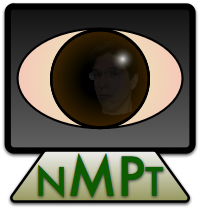

0.4
Introduction

The NMPT package consists of an API and a set of libraries for Machine Perception that were developed by Nicholas Butko. It can be obtained via the Download NMPT section. Directions for compiling the software (including platform-specific directions for installing OpenCV 2.1+) are in the Installation section. The central philosophy of this package is three-fold:
- Easy to Install
- Easy to Learn API
- Easy to Run
The code is meant to stand alone under any standard C++ compiler, with the exception that it requires the OpenCV 2.1+ libraries. The only platform-specific (or user specific) portion of the compilation should be correctly locating the OpenCV libraries on your system. A few standard configurations are supported, but porting the code to a new system is as simple as modifying the Makefile to reflect the location of the OpenCV header files (includes) and libraries.
The core of the library is an API for Machine Perception Primitives. There is also a separate API for the Auxilliary Tools used internally, which may also be useful to others.
The following Machine Perception Primitives are currently implemented in this library / API:
- FastSalience: An implementation of the "Fast Salience Using Natural-statistics" algorithm from Butko et al., 2008. If this code is used in your research, please cite both the paper and this NMPT package. FastSUN is an efficient implementation of Zhang et al.'s SUN algorithm (see Related Publications).
- MIPOMDP: An implementation of the "Multinomial Infomax-POMDP" algorithm from Butko and Movellan, 2009. If this code is used in your research, please cite both the paper and this NMPT package. MIPOMDP is an extension of the IPOMDP Infomax Model of Eye-movment in Butko and Movellan, 2008; Najemnik and Geisler, 2005 (see Related Publications).
- GentleBoostClassifier and GentleBoostCascadedClassifier: An implementation of a fast approach to object detection, described in Fasel 2006 (see Related Publications). GentleBoostClassifier is useful for two-way classification whole images (or image patches). GentleBoostCascadedClassifier is useful for learning very efficient object detectors that search for objects in video in real time.
- InternalMotionModel: An implementation of the method described in Butko and Movellan, 2010 (see Related Publications) for allowing robots to learn how their eyes work.
The Example Programs are meant to be both illustrative of code usage, and valuable stand-alone tools for research for those who don't wish to code their own programs using the API. The following examples are included:
Examples of FastSalience:
- simplesalience_page - The simplest program that illustrates the use of the FastSalience class. One of the included movies is loaded into memory and processed frame-by-frame for salience. The result is displayed. To run:
>>bin/SimpleSalienceExample
- FastSUN - A more advanced program that in a visually rich way the default parameter set of the FastSalience class. This program can take input from any video that OpenCV can read, or from an attached camera. It displays the input/output of the salience program, and timing information. To run:
>>bin/FastSUN [optional-path-to-movie-file]
- FastSUN - A program that illustrates the range of parameters that can control the FastSalience class. This program can take input from any video that OpenCV can read, or from an attached camera. It displays the input/output of the salience program, and timing information. It has a user-interface where all of the parameters to the salience algorithm can be modified manually. To run:
>>bin/FastSUN [optional-path-to-movie-file]
- FastSUNImage - A similar example to the one above, this program analyzes a static image for salience. To run:
>>bin/FastSUNImage [optional-path-to-image-file]
Examples of MIPOMDP:
- SimpleFaceTracker An example the simplest program using of the MIPOMDP class. Loads a video, and produces one fixation per video frame, tracking the face across video frames. To run:
>> bin/SimpleFaceTracker
>> bin/FoveatedFaceTracker [optional-path-to-movie-file]
- FoveatedFaceTracker A more complete example of the MIPOMDP algorithm, displaying visualizations of the algorithm internals, and taking multiple input sources (camera, video). To run:
>> bin/FoveatedFaceTrackerImage [required-path-to-image-file]
- CVPRTestSpeed - Reproduce the speed results from Butko and Movellan, CVPR 09 on your own machine. To run:
(1) Uncompress and Expand the included GENKI R2009a dataset. Make sure the GENKI-R2009a folder is in the data directory:
>> tar -xzvf data/GENKI-R2009a.tgz -C data/
(2) Run the program.
>> bin/CVPRTestSpeed
- CVPRTrainModels - Reproduce the Multinomial Observation Models used to generate results in Butko and Movellan, CVPR 09 on your own machine. This file is included for instructional purposes -- the files that it creates are already included in the data directory (data/MIPOMDPData-21x21-4Scales-*.txt). To run:
(1) Uncompress and Expand the included GENKI R2009a dataset. Make sure the GENKI-R2009a folder is in the data directory:
>> tar -xzvf data/GENKI-R2009a.tgz -C data/
(2) Run the program.
>> bin/CVPRTrainModels
- TrainNarrowFOVModel - Reproduce the Multinomial Observation Model used in the FoveatedFaceTracker example. This model has a narrow field of view, so that it cannot access the whole image at once. This illustrates how MIPOMDP can be used to simulate an active camera. This file is included for instructional purposes -- the files that it creates are already included in the data directory (data/MIPOMDPData-21x21-3Scales-*.txt). To run:
(1) Uncompress and Expand the included GENKI R2009a dataset. Make sure the GENKI-R2009a folder is in the data directory:
>> tar -xzvf data/GENKI-R2009a.tgz -C data/
(2) Run the program.
>> bin/TrainNarrowFOVModel
Acknowledgements
This work was supported by the National Science Foundation (NSF) Grant # NSF ECS-0622229